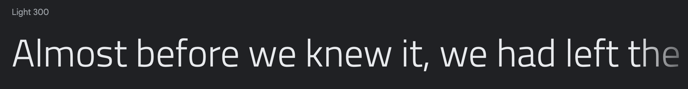
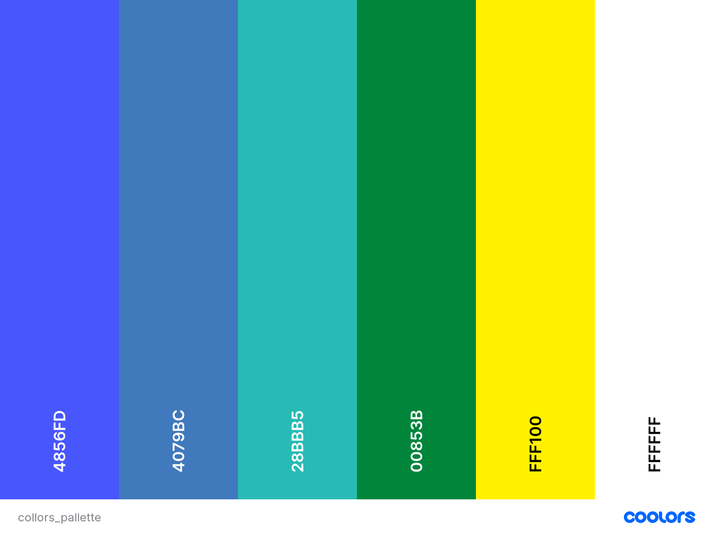
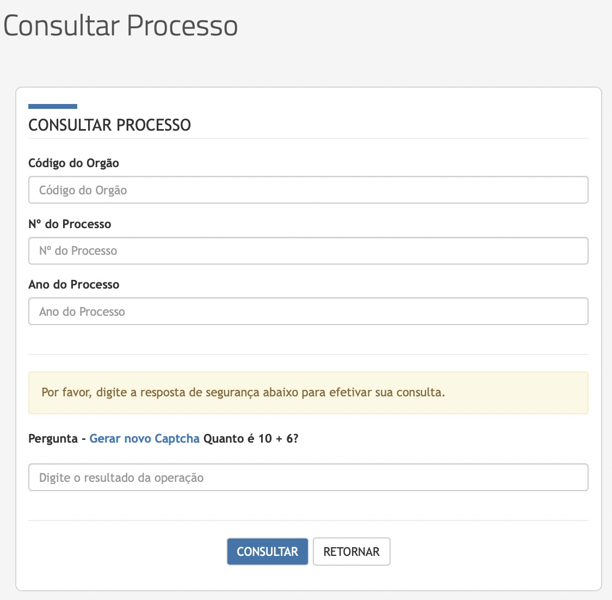

Guia de Estilo
1. Introdução
1.1. Objetivo do guia de estilo
Trata-se de um registro das principais decisões de design tomadas, de forma que elas não se percam, isto é, sejam efetivamente incorporadas no produto final. O guia de estilo tem como objetivo se tornar um meio de comunicação entre os membros de design, assim como os desenvolvedores, para servir como base para tomadas de decisão e criação de padrões que podem ser reutilizados durante versões futuras.
Um guia de estilo pode ser criado com diferentes escopos: plataforma, corporativo, familia de produtos e um produto específico (Mayhew, 1999).
1.2. Organização e conteúdo do guia de estilo
Para organização do guia de estilo, teremos como base o ciclo de vida de Mayhew, o que sugere que o guia de estilo seja refinado a cada ciclo.
1.3. Público-alvo do guia de estilo
Nós, que desenvolveremos o protótipo e possíveis desenvolvedores que realizarão alterações no site.
1.4. Como utilizar o guia
O guia deve ser utilizado como base para modificação, atualização ou novas implementações do site, tendo em vista que o site escolhido ja foi desenvolvido.
1.5. Como manter o guia
Como já citado anteriomente, o ciclo de vida de Mayhew nós indica fazer modificações a cada ciclo do processo.
2. Resultado da análise
2.1. Descrição do ambiente de trabalho
O usuário, ao acessar o site, se depara com um baner com informações sobre funcionalidades do sistema. Em seguida, o site o mostra as informações em destaque, após isso é apresentado um menu com as principais funcionalidades do site. Em seguida são apresentados links externos, assim como seus serviços e funcionalidades.
3. Elementos de interface
3.1 Disposição espacial e grid
O grid está disposto de forma que o usuário tem que descer muito a página para encontrar alguns elementos, isso se dá pelo excesso de elementos no layout. Algumas seções contem elementos correlacionados, que poderiam ser melhor alocados.

3.2 Janelas
O site possui inúmeras janelas. Janelas informativas sobre o Detran como: estrutura, postos de atendimento, base júridica, agenda do diretor, janelas de serviço, janelas sobre educação, janelas de transparência pública, estatísticas, portais de serviços e sala de imprensa.
3.3 Tipografia
As fontes utilizadas pelo site são: Montserrat, open sans e titillium Web.



3.4 Símbolos não tipográficos
O site utiliza minimamente de símbolos não tipográficos, nosso grupo encontrou apenas três deles.

Esses símbolos representam a funcionalidade de busca, o menu do site e a funcionalidade de libras respectivamente. Todos os ícones são intuitivos, já que são utilizados como padrão em sites na atualidade, o símbolo de libras pode ser um menos intuitivo mas ao passar o mouse por cima, uma explicação aparece ao lado.
3.5 Cores
Há pouca variação de cores, porém as tonalidades possuem uma grande diferença. As cores utilizadas foram:

3.2 Animações
Algumas animações podem ser encontradas no site, assim como citado anteriormente, quando o mouse está sobre o ícone de libras uma caixa aparece para explicar sobre a funcionalidade. Alem desse animação, há algumas pequenas animações em botões e textos quando o mouse está sobre eles.
4. Elementos de interação
4.1. Estilos de interação
O site utiliza de menus, para navegação entre janelas, alem de linguagem natural que indica onde estão as funcionalidades e sobre suas utilizações. O site também se utiliza de hyperlinks para direcionar o usuário as funcionalidades que estão em links externos.
4.2. Seleção de um estilo
Menu de navegação e a utilização de hyperlinks são predominantes no site. Tornando o fluxo de utilização de uma funcionalidade em:
- Procurar a funcionalidade desejada no menu de navegação;
- Entrar na janela relacionada;
- Clicar no hyperlink;
- Ser redirecionado para a funcionalidade desejada.
4.3. Aceleradores
Nosso grupo não encontrou aceleradores ou teclas de atalho no site.
5. Elementos de ação
5.1. Preenchimento de campos
Para realizar uma consulta sobre algum processo, o usuário deve informar alguns dados do processo, se o usuário não informar todos os dados ou informá-los de forma incorreta, o sistema impossibilita a realização do mesmo. Como citado anteriormente no guia de estilo, o layout inicial possui inúmeros elementos o que causa o difícil acesso de alguns deles, um exemplo é a consulta de processo que existe em uma janela especifica porém também faz parte do layout inicial.


5.2. Seleção
Ao procurar por contas anuais na janela de transparência pública, o usuário se depara com elementos de seleção de ano e mês para gerar o documento de contas.

5.4. Ativação
A ativação dos formulários de dá ao clicar no botão de enviar que é encontrado na parte inferior de todo formulário do site, já nos elementos de seleção, a ativação se da no momento de escolha do mês.
6. Vocabulários e padrões
6.1. Termologia
Como citado anteriormente, o site possui não somente muitos links externos, como conteúdos externos. Devido a esse motivo, o vocabulário do site é vasto, assim como a termos nixados.
6.2. Tipos de tela
As telas do site seguem um padrão, baseado em um menu lateral com tópicos e o conteúdo da tela na direita. Algumas telas fogem desse padrão, como por exemplo a tela inicial mas não causa um desconforto ao usuário.
6.3. Sequência de diálogos
O sistema nos apresenta uma mensagem na parte superior do site quando realizamos algumas requisição, tanto quando a requisição é aceita quanto quando existe problemas com a mesma.
Referências
- Todas imagens utilizadas foram retiradas do site do Detran-DF
Barbosa, S. D. J.; Silva, B. S. da; Silveira, M. S.; Gasparini, I.; Darin, T.; Barbosa, G. D. J. (2021) Interação Humano-Computador e Experiência do usuário. Autopublicação.
- Diagramas apresentados foram criados
Versionamento
| Versão | Data | Modificação | Autor |
|---|---|---|---|
| 1.0 | 03/09/2021 | Criação do documento | Arthus e Marcos Felipe |
| 1.1 | 19/10/2021 | Correção de erros | Matheus |